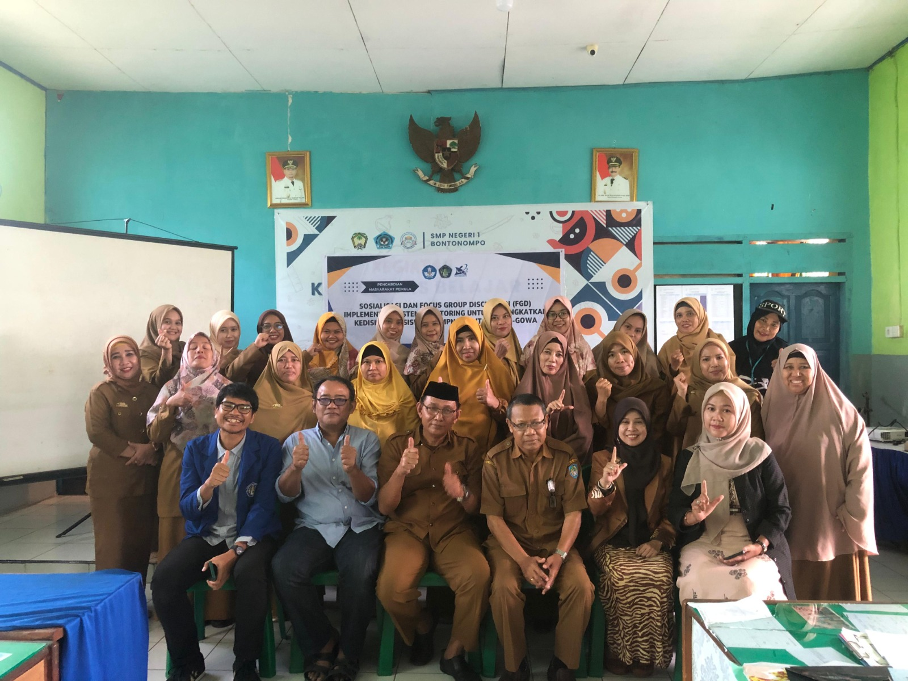
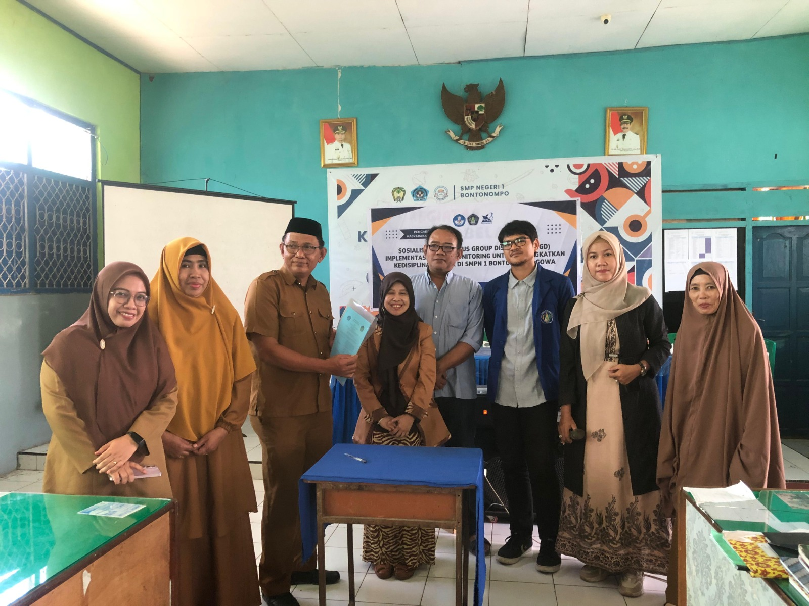

Makassar, 2 September 2024 Tim PMP Universitas Handayani Makassar berhasil melakukan sosialisasi dan Focus Group Discusion untuk nantinya pengimplementasian sistem monitoring siswa berbasis pesan sebagai bagian dari program pengabdian masyarakat di SMPN 1 Bontonompo Gowa. Program inovatif ini bertujuan untuk meningkatkan kedisiplinan siswa dan menciptakan lingkungan belajar yang lebih kondusif. Kolaborasi antara dosen & mahasiswa dan guru-guru SMPN 1 Bontonompo Gowa ini semoga menunjukkan hasil yang positif, salah satunya dengan penurunan kasus pelanggaran disiplin siswa.

← Kembali ke Halaman Informasi